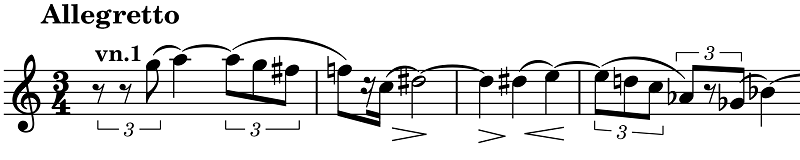

ツェムリンスキー: 弦楽四重奏曲第3番
ラサール四重奏団がツェムリンスキーの弦楽四重奏曲4曲の録音を出したのが1980年代のこと。当時話題にはなっていたようだが、残念ながら買うことも聴くこともなかった。ようやく配信で聴いてみて、長いけれども劇的かつロマンティックな『第2番』は曲も演奏も流石に素晴らしいと思った。比較して『第3番』は、伝統的な4楽章形式に戻り長さも普通になって一見取っつきやすそうなのだが、そっけない主題や一層増した前衛性など、気難しい辛口の曲だという印象が残った。
その後出会ったのが下のアルバム。ラサール四重奏団以降全集アルバムが何種類も出ている中で、『第3番』だけを取り上げている。これを聴いて印象がかなり変わった。呼吸が深くてフレーズの生命力が浮彫りとなり、音色やダイナミクスの振幅も大きく、すっかり魅力的な甘口の装いになっている。呼吸音が多く入ってしまっているのはその代償かもしれないが、臨場感があって悪くない。
Alexander v. Zemlinsky: String Quartet No. 3
Op. 19
Quartetto Adorno
(Released 2019)
例えば、第1楽章冒頭の最初のフレーズ（下）の息継ぎである F-C において、F音の余韻を確保し、休符でしっかりと間を取っていること。これはすぐ次に出てくる As-Ges の三連符のリズムとの差異を強調する目的もあるのだろう。ラサール四重奏団などの演奏では意外にも両者の区別をすっぱりと取り去っているように聴こえる。第2主題にヴィブラートを掛け過ぎないのも好感が持てる。

この曲の白眉は第2楽章（変奏曲）だろう。その前衛性、新しい響きへの試みを見るに、ベルクなどの影響も濃厚ではあるが、未来に向けて独自の槍を飛ばすことに十分に成功していると思う。同楽章や続く第3楽章（ロマンス）あたりはどの演奏を聴いてもたいていは満足できる。しかし終楽章（ブルレスケ）において、この演奏の放つ力感は「圧倒的」といってよさそうだ。
『第3番』が作曲されたのは1924年、『抒情交響曲』の作曲直後、夏の休暇（おそらくプラハのドイツ劇場での指揮の仕事の休暇）でオーストリアのアルト・アウスゼーに滞在している間にさっと書き上げられた作品とのこと。つまり円熟期の作品ということになる。ちなみにツェムリンスキーの初期の室内楽曲では、以前ゴルトマルクの回で取り上げたアルバムに一緒に入っていた『ピアノ三重奏曲』（オリジナルは『クラリネット三重奏曲 作品3』）、特にその第2楽章も良い曲で、つくづく才気あふれる作曲家だったのだなあと思わされる。
なお、ラサール四重奏団の『第3番』はDGの録音よりもずっと前の1965年の放送音源がヘンスラーから出ている。とても瑞々しい録音で、個人的にはDGのものよりも窮屈感がなく聴きやすく感じた。
(Jul. 20, 2024)